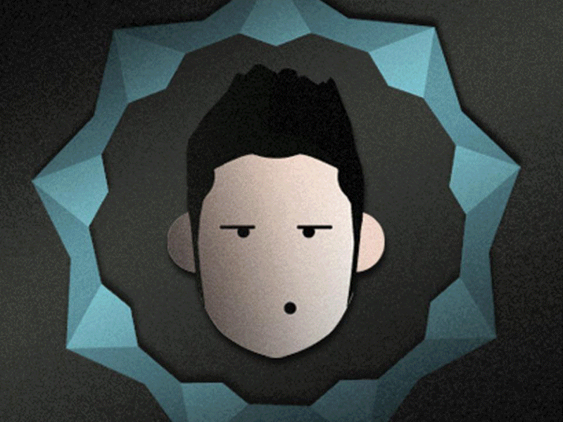

This section explores my online identity, my digital footprint, and how I navigate and present myself within digital environments.
Based on our previous topic about the Digital Self, my Digital Self is how I exist and am represented online, including the online versions of myself I choose to show, all the data that exists about me online and how I translate my real life into digital forms. My online and offline identities are connected, with my digital persona adapting to different online spaces and my digitized self-reflecting my online activities. Digital environments shape how I behave and present myself, from past gaming interactions to current app usage. I understand the importance of managing my digital identity responsibly as well as being aware of my online footprint, and ensuring my digital self reflects my values ethically.
